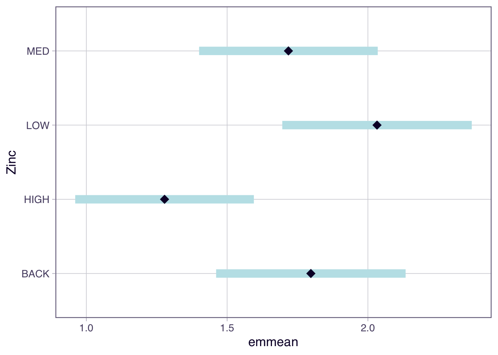
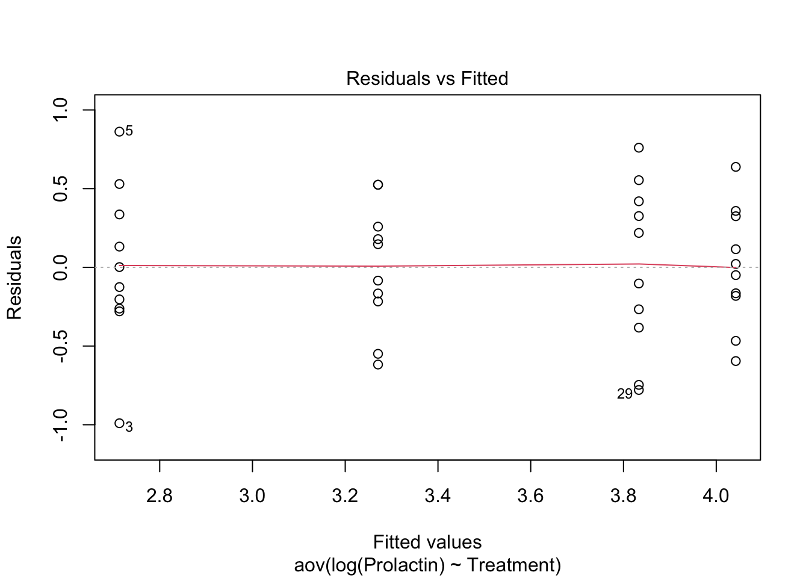
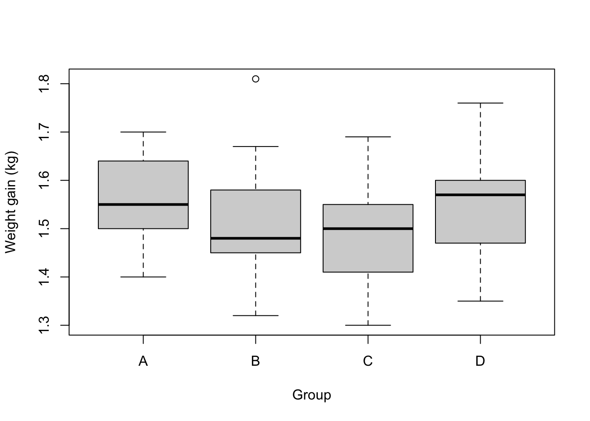

# write your code here
TipLearning outcomes
At the end of this Lab students should be able to:
test the assumptions of ANOVA using residual diagnostics;
use plotting and Tukey’s tests to determine which pairs of groups are significantly different;
use R to perform the analyses.
All of the data for this practical is in the Data4.xlsx file.
Exercise 1 - Diatoms in streams (Walk-through)
Here we will test the assumptions using residual diagnostics and finding significant differences using plots and Tukey’s test. The data is found in the Diatoms worksheet.
Question 1.1
(i) Importing and processing data, then fitting an ANOVA model
Solution
library(readxl)
diatoms<-read_excel("data/Data4.xlsx",sheet="Diatoms")
diatoms$Zinc<-as.factor(diatoms$Zinc)
str(diatoms)tibble [34 × 4] (S3: tbl_df/tbl/data.frame)
$ Stream : chr [1:34] "Eagle" "Blue" "Blue" "Blue" ...
$ Zinc : Factor w/ 4 levels "BACK","HIGH",..: 1 1 1 1 1 1 1 1 3 3 ...
$ Diversity: num [1:34] 2.27 1.7 2.05 1.98 2.2 1.53 0.76 1.89 1.4 2.18 ...
$ Group : num [1:34] 1 1 1 1 1 1 1 1 2 2 ...anova.diatoms<-aov(Diversity~Zinc,data=diatoms)
summary(anova.diatoms) Df Sum Sq Mean Sq F value Pr(>F)
Zinc 3 2.567 0.8555 3.939 0.0176 *
Residuals 30 6.516 0.2172
---
Signif. codes: 0 '***' 0.001 '**' 0.01 '*' 0.05 '.' 0.1 ' ' 1Question 1.2
(ii) Statistical test of the assumption of constant variance
Statistics is made up of different tribes and some tribes use hypothesis testing to see if a dataset meets the assumptions of normality and constant variance. One option is the Bartlett’s test for constant variances. The mechanics are not important but the function and syntax are shown below. The hypotheses are:
H_0:\ \sigma_{BACK}^2=\sigma_{LOW}^2=\sigma_{MED}^2=\sigma_{HIGH}^2
H_1:\ not\ all\ \sigma_i^2\ are\ equal\ \left(i\ =\ BACK,\ LOW,\ MED,\ HIGH\right)
We prefer to use numerical and graphical diagnostics, e.g. residuals plots, but this is more to show you other possibilities. You can use this as a different line of evidence for testing assumptions if you wish.
Warning
It won’t work if the data is non-normal and only use it if the data has one treatment factor with a completely randomised design!
#Solution
bartlett.test(rstandard(anova.diatoms)~diatoms$Zinc)
Bartlett test of homogeneity of variances
data: rstandard(anova.diatoms) by diatoms$Zinc
Bartlett's K-squared = 0.25337, df = 3, p-value = 0.9685Based on the P-value being > 0.05 we could state that we retain the null hypothesis and that the variances are equal.
Question 1.3
(iii) Identify significant differences
In Topic 3 we used the emmeans package to extract means for each group and their associated 95% CI. The emmeans is useful to produce a plot showing the mean and 95% CI which is a nice way to present the results.
#Solution
#install.packages("emmeans",repos="http://cran.csiro.au/")
library(emmeans)
emmeans(anova.diatoms, "Zinc") Zinc emmean SE df lower.CL upper.CL
BACK 1.80 0.165 30 1.461 2.13
HIGH 1.28 0.155 30 0.961 1.60
LOW 2.03 0.165 30 1.696 2.37
MED 1.72 0.155 30 1.401 2.04
Confidence level used: 0.95 plot(emmeans(anova.diatoms, "Zinc"))
Based on the non-overlapping confidence intervals the only pairs of groups that are significantly different are HIGH and LOW. However more correctly we are looking at whether the difference in means = 0 which is a slightly different question to seeing if the 95% CI around the mean overlaps.
Question 1.4
(iv)The another approach is to use a Tukey’s test which we can extract using the emmeans(model-goes-here, pairwise ~ your-treatment) function from the emmeans package. Note there are many other post-hoc tests that have come and gone, but we will just focus on one of them.
Solution
emmeans(anova.diatoms,pairwise ~ Zinc)$emmeans
Zinc emmean SE df lower.CL upper.CL
BACK 1.80 0.165 30 1.461 2.13
HIGH 1.28 0.155 30 0.961 1.60
LOW 2.03 0.165 30 1.696 2.37
MED 1.72 0.155 30 1.401 2.04
Confidence level used: 0.95
$contrasts
contrast estimate SE df t.ratio p.value
BACK - HIGH 0.5197 0.226 30 2.295 0.1219
BACK - LOW -0.2350 0.233 30 -1.008 0.7457
BACK - MED 0.0797 0.226 30 0.352 0.9847
HIGH - LOW -0.7547 0.226 30 -3.333 0.0117
HIGH - MED -0.4400 0.220 30 -2.003 0.2096
LOW - MED 0.3147 0.226 30 1.390 0.5153
P value adjustment: tukey method for comparing a family of 4 estimates You will note the following pairs are different:
- ‘LOW’ and ‘HIGH’;
Question 1.5
(v) Another way to present the results is to use the plot() function to show the confidence intervals and the comparisons among them.
Solution
plot(emmeans(anova.diatoms, "Zinc"), comparisons = TRUE)
In the plot function above, we’ve specified comparisons = TRUE. The blue bars are confidence intervals for the EMMs, and the red arrows are for the comparisons among them. If an arrow from one mean overlaps an arrow from another group, the difference is not significant.
Question 1.6
An alternative base R function for Tukey tests is TukeyHSD(). It creates a set of confidence intervals on the differences between the means of the levels of a factor. Also plot the results from this function.
Tip
If the confidence interval does not cross over 0, then that pair significantly differs from each other.
#Solution
TukeyHSD(anova.diatoms, conf.level = 0.95) Tukey multiple comparisons of means
95% family-wise confidence level
Fit: aov(formula = Diversity ~ Zinc, data = diatoms)
$Zinc
diff lwr upr p adj
HIGH-BACK -0.51972222 -1.1355064 0.09606192 0.1218677
LOW-BACK 0.23500000 -0.3986367 0.86863665 0.7457444
MED-BACK -0.07972222 -0.6955064 0.53606192 0.9847376
LOW-HIGH 0.75472222 0.1389381 1.37050636 0.0116543
MED-HIGH 0.44000000 -0.1573984 1.03739837 0.2095597
MED-LOW -0.31472222 -0.9305064 0.30106192 0.5153456We can also plot the results from TukeyHSD() to easily see where, if any, the differences are.
plot(TukeyHSD(anova.diatoms))
Tip
Note a type I error rate is defined by your significance level (alpha). In other words, there’s a chance that you will reject a null hypothesis that is actually true—it’s a false positive. When you perform only one test, the type I error rate equals your significance level, which is often 5%. However, as you conduct more and more tests, your chance of a false positive increases. If you perform enough tests, you’re virtually guaranteed to get a false positive! The error rate for a family of tests is always higher than an individual test. Here in the TukeyHSD function you set the family-wise level of significance and the p-values for the individual tests are adjusted accordingly.
Exercise 2 - Mean comparisons, residual diagnostics and back-transformations
In this exercise will add a layer of complexity by considering a transformation. If our data does not meet the assumptions we need to transform the data, possible transformations are the square root (weak) and log (high). When we transform the data we need to be careful about how we interpret the results.
Concentration of prolactin (units g/L) in the pituitary glands of nine-spined stickleback fish was assessed. The fish were kept in either saltwater or freshwater prior to assay and were different batches were examined on three successive occasions. Cysts tend to develop in fish when kept in saltwater and sometimes develop in freshwater populations. The four different groups of fish were used in a preliminary experiment to examine the effects of cysts, whether induced by saltwater or normally present, on the prolactin production of the pituitary gland.
The four groups of fish were codes as follows, with 10 fish per group:
A = saltwater cysts, day 1;
B = freshwater, no cysts, day 2;
C = freshwater, no cysts, day 2;
D = freshwater, cysts, day 3.
The data is found in the Prolactin worksheet.
Question 2.1
(i) Import the data into R, perform some exploratory data analysis to make tentative suggestions about differences between means and the likelihood of the data meeting the assumptions.
#Solution
library(readxl)
fish<-read_excel("data/Data4.xlsx",sheet="Prolactin")
fish$Treatment <- as.factor(fish$Treatment)
str(fish)tibble [40 × 2] (S3: tbl_df/tbl/data.frame)
$ Treatment: Factor w/ 4 levels "A","B","C","D": 1 1 1 1 1 1 1 1 1 1 ...
$ Prolactin: num [1:40] 15.1 25.6 5.6 11.4 35.7 17.2 13.3 21.1 11.6 12.3 ...First we create some boxplots for each group which show there are difference in median between each of the treatments. There looks like some treatment effect. In terms of the assumptions the spread of data in each treatment looks different based on the size of the boxes and length of the whiskers. However for each group the upper and lower whisker lengths are similiar so the distribution is likely to be symmetrical (normal).
boxplot(Prolactin ~ Treatment, ylab = "Prolactin concentration", data = fish)
Next we generate summary statistics. The variances are very different (ratio of largest: smallest > 4:1), therefore the assumption of constant variance is unlikley to be met. The mean and median are similar for each treatment so the normality assumption could be met.
aggregate(Prolactin ~ Treatment, mean, data = fish) Treatment Prolactin
1 A 16.89
2 B 28.22
3 C 52.27
4 D 60.73aggregate(Prolactin ~ Treatment, median, data = fish) Treatment Prolactin
1 A 14.20
2 B 27.35
3 C 49.60
4 D 56.20aggregate(Prolactin ~ Treatment, sd, data = fish) Treatment Prolactin
1 A 8.629723
2 B 10.786700
3 C 26.165628
4 D 23.211302Question 2.2
(ii) Fit an ANOVA model and test the assumption of normality using a QQ plot and a histogram - both based on standardised residuals.
#Solution
The QQ plot and the histogram indicate the data is normally distributed.
pro.aov <- aov(Prolactin ~ Treatment, data = fish)
qqnorm(rstandard(pro.aov))
abline(0,1)
hist(rstandard(pro.aov))
Question 2.3
(iii) Assess the assumption of constant variance by:
- examine the plot of the standardised residuals against fitted values;
#- From the performance package, use
check_model()to assess the assumptions of the model. This function will check the assumptions of normality and constant variance;
#- using the Bartlett’s test;
#- using
check_homogeneity()from theperformancepackage;
Tip
Note there are many tests: method = c("bartlett", "fligner", "levene", "auto")
#- calculating the ratio of the larges SD:smallest SD to see if it is below 2:1;
#Solution
This plots shows an increasing spread (fanning) of the residuals as the fitted values increase. The assumption of constant variance is not tenable.
plot(pro.aov, which = 1)
- From the performance package, use
check_model()to assess the assumptions of the model. This function will check the assumptions of normality and constant variance;
library(performance)
check_model(pro.aov)
- using the Bartlett’s test;
The P-value is less than 0.05 so we reject the null hypothesis. The variances are not equal.
bartlett.test(rstandard(pro.aov) ~ fish$Treatment)
Bartlett test of homogeneity of variances
data: rstandard(pro.aov) by fish$Treatment
Bartlett's K-squared = 13.651, df = 3, p-value = 0.003421- using
check_homogeneity()from theperformancepackage; Note there are many tests:method = c("bartlett", "fligner", "levene", "auto")
check_homogeneity(pro.aov, method = "bartlett")Warning: Variances differ between groups (Bartlett Test, p = 0.003).- calculating the ratio of the larges SD:smallest SD to see if it is below 2:1;
The ratio is 3.03 so further evidence of the variances being unequal.
out<-tapply(fish$Prolactin,fish$Treatment,sd)
out A B C D
8.629723 10.786700 26.165628 23.211302 out[3]/out[1] C
3.032036 Question 2.4
(iv) The data does not meet the assumptions so log transform (‘log’ function) the response and repeat (ii) and (iii) to test the assumptions;
#In R you can transform data in the model formula see below or you could create a new column in your data frame, for example fish$logProlactin<-log(fish$Prolactin).
Solution
The log transformation has not changed the distribution dramatically, it is still normally distributed.
pro.aov <- aov(log(Prolactin) ~ Treatment, data = fish)
qqnorm(rstandard(pro.aov))
abline(0,1)
hist(rstandard(pro.aov))
All of the ways to assess the constant variance assumption indicate the variances are equal after the log transformation.
plot(pro.aov, which = 1)
bartlett.test(rstandard(pro.aov) ~ fish$Treatment)
Bartlett test of homogeneity of variances
data: rstandard(pro.aov) by fish$Treatment
Bartlett's K-squared = 1.5541, df = 3, p-value = 0.6698out<-tapply(log(fish$Prolactin),fish$Treatment,sd)
out A B C D
0.5097462 0.3994729 0.5382265 0.3785816 out[3]/out[4] C
1.421692 Question 2.5
(v) If the assumptions are met and there is significant F-test perform Tukey tests and identify which pairs are significantly different.
#Solution
The ANOVA table indicates we reject the null hypothesis.
summary(pro.aov) Df Sum Sq Mean Sq F value Pr(>F)
Treatment 3 10.717 3.572 16.76 5.57e-07 ***
Residuals 36 7.672 0.213
---
Signif. codes: 0 '***' 0.001 '**' 0.01 '*' 0.05 '.' 0.1 ' ' 1The results of the Tukey test are show below.
emmeans(pro.aov,pairwise ~ Treatment)$emmeans
Treatment emmean SE df lower.CL upper.CL
A 2.71 0.146 36 2.42 3.01
B 3.27 0.146 36 2.97 3.57
C 3.83 0.146 36 3.54 4.13
D 4.04 0.146 36 3.75 4.34
Results are given on the log (not the response) scale.
Confidence level used: 0.95
$contrasts
contrast estimate SE df t.ratio p.value
A - B -0.558 0.206 36 -2.701 0.0491
A - C -1.120 0.206 36 -5.425 <.0001
A - D -1.329 0.206 36 -6.438 <.0001
B - C -0.562 0.206 36 -2.724 0.0466
B - D -0.771 0.206 36 -3.737 0.0035
C - D -0.209 0.206 36 -1.013 0.7431
Results are given on the log (not the response) scale.
P value adjustment: tukey method for comparing a family of 4 estimates or:
TukeyHSD(pro.aov) Tukey multiple comparisons of means
95% family-wise confidence level
Fit: aov(formula = log(Prolactin) ~ Treatment, data = fish)
$Treatment
diff lwr upr p adj
B-A 0.5576099 0.001593344 1.1136265 0.0491223
C-A 1.1199871 0.563970549 1.6760037 0.0000235
D-A 1.3290431 0.773026472 1.8850596 0.0000011
C-B 0.5623772 0.006360617 1.1183938 0.0465770
D-B 0.7714331 0.215416540 1.3274497 0.0034562
D-C 0.2090559 -0.346960665 0.7650725 0.7431453Question 2.6
(vi) One issue is that we have performed our hypothesis testing on the log scale. This means there are some steps to be made if we wish to interpret the data on the original scale; e.g. provide a 95% CI on the original scale. We will step through these.
Suppose the biologist was primarily interested in comparing the prolactin concentrations for A (saltwater cysts, day 1) vs B (freshwater, no cysts, day 1).
- Find the means and CI from the output of the
TukeyHSD()oremmeans()function. - The CI and mean are on the log scale, so back-transform the difference in the means (
exp()function), the lower and upper end-point 95% CI. Note that the upper and lower tail are not of equal length on the original scale.
#Solution
tukey.results <- TukeyHSD(pro.aov)
B.A.diff <- tukey.results$Treatment[1,1]
B.A.diff[1] 0.5576099Back-transform the difference in the means and the lower and upper end-point 95% CI.
exp(B.A.diff) # difference between means[1] 1.746493exp(1.1136265) # upper CI[1] 3.045382exp(0.001593344) # lower CI[1] 1.001595Question 2.7
(vii) Now have an estimate of the difference in the means on the original scale. It actually corresponds to a ratio on the original scale. The reason is based on log laws, we can write the difference between 2 logged numbers (A and B) as a log of their ratio (A/B);
\log\left(A\right)-\log\left(B\right)=\log\left(\frac{A}{B}\right).
If we back-transform the log of their ratio we get the ratio on the original scale;
e^{\log\left(\frac{A}{B}\right)}=\frac{A}{B}.
So the back-transformed difference between the pairs of the means is a ratio.
Note: if we were to back-transform the group means on the log scale we would get the geometric mean on the original scale.
Provide a biological interpretation for this estimate and confidence interval. Use the CI to decided if there is a significant difference between Treatment A and Treatment B.
Solution
Since we interpret the back-transformed difference as a ratio, we conclude that the mean prolactin concentration in Treatment B is estimated as 1.75 that in Treatment A. However, the 95% CI for this ratio extends from 1.002 to 3.045. Since the 95% CI for the ratio >1 (just), this also demonstrates the mean prolactin concentrations for Treatments A and B do differ significantly (P < 0.05). Note if the ratio (on the original prolaction scale) is 1, then, this implies meanB / meanA = 1, i.e. mean_{B} = mean_{A}.
Exercise 3 - Broiler Chickens
This exercise is an analysis of a set of growth data. It is an open question for you to gain more practice.
The effect of weight gain in dressed broiler chickens was determined after five generations of selection. Group A was bred by using only the heaviest 10% in each generation; groups B and C were bred using respectively the heaviest 30% and 50%; group D was obtained by crossing groups A and C of the previous generation. The dressed weights (kg) of 25 birds from each group have been recorded.
The data is found in the Broilers worksheet.
Question 3.1
(i) Write down the null and alternate hypothesis. What is the treatment factor, and how many levels does it have? What are the sample sizes for each group (n_i)?
Solution
H_0:\ \mu_A=\mu_B=\mu_C=\mu_D
H_1:\ not\ all\ \mu_i\ are\ equal
where i (i = A, B, C, D) is the population mean weight gain for broilers in selection group i. The treatment factor is the selection group, with t = 4 levels in this factor. There are r = 25 chicks in each selection group (equal replication).
Question 3.2
(ii) Import the data into R, and then obtain some numerical and graphical summaries of the data, by each group. How would you interpret these data? From these summaries, is the assumption of homogeneity of variances met? What about normality? Try a formal Bartlett’s test using the bartlett.test or check_homogeneity() function. Use residual diagnostics to assess the assumptions.
#Solution
The summary statistics by group indicate the data is likely to be normally distributed (mean ~ median) and the variances are equal. This confirmed by boxplots for each group.
library(readxl)
broilers<-read_excel("data/Data4.xlsx",sheet="Broilers")
str(broilers)tibble [100 × 2] (S3: tbl_df/tbl/data.frame)
$ WtGain: num [1:100] 1.67 1.64 1.6 1.66 1.4 1.48 1.7 1.5 1.67 1.52 ...
$ Group : chr [1:100] "A" "A" "A" "A" ...broilers$Group<-as.factor(broilers$Group)
aggregate(WtGain ~ Group, summary, data = broilers) Group WtGain.Min. WtGain.1st Qu. WtGain.Median WtGain.Mean WtGain.3rd Qu.
1 A 1.4000 1.5000 1.5500 1.5644 1.6400
2 B 1.3200 1.4500 1.4800 1.5160 1.5800
3 C 1.3000 1.4100 1.5000 1.4860 1.5500
4 D 1.3500 1.4700 1.5700 1.5424 1.6000
WtGain.Max.
1 1.7000
2 1.8100
3 1.6900
4 1.7600boxplot(WtGain ~ Group, ylab = "Weight gain (kg)", data = broilers)
aggregate(WtGain ~ Group, sd, data = broilers) Group WtGain
1 A 0.09046546
2 B 0.10984838
3 C 0.09673848
4 D 0.09925892The residual diagnostics indicate the data is normally distributed and variances are equal.
broilers.aov <- aov(WtGain ~ Group, data = broilers)
qqnorm(rstandard(broilers.aov))
abline(0,1)
hist(rstandard(broilers.aov))
plot(broilers.aov, which = 1)
The Bartlett’s test indicates the variance are equal.
bartlett.test(rstandard(broilers.aov) ~ broilers$Group)
Bartlett test of homogeneity of variances
data: rstandard(broilers.aov) by broilers$Group
Bartlett's K-squared = 0.93192, df = 3, p-value = 0.8177or
check_homogeneity(broilers.aov, method = "bartlett")OK: There is not clear evidence for different variances across groups (Bartlett Test, p = 0.818).Question 3.3
(iii) Note that the results of the analysis can only be used when the assumptions of the analysis have been met. If you believe that the assumptions are met, then what would your conclusions of the analysis of variance be? You should use the summary() function applied to your aov() object to obtain the ANOVA table.
#Solution
The ANOVA table indicates we reject the null hypothesis.
summary(broilers.aov) Df Sum Sq Mean Sq F value Pr(>F)
Group 3 0.0859 0.028648 2.904 0.0387 *
Residuals 96 0.9471 0.009865
---
Signif. codes: 0 '***' 0.001 '**' 0.01 '*' 0.05 '.' 0.1 ' ' 1Question 3.4
(iv) Without any formal analysis, consider the result of the group means in relation to the group treatment - i.e. type of selection. Would this pattern be expected? If appropriate perform a Tukey test.
#Solution
Looking at the sample means, this pattern might be expected from the breeding experiment: weight gain appears to be related to the degree of weight selection in each generation. For Group 1 (A), the heaviest 10% of birds were used, as this breed did result in the highest wait gain, with lesser increases for Groups 2 (B) and 3 (C). Similarly, since Group 4 (D) was obtained by crossing Groups 1 and 3, then an intermediate result might be expected – and this is what occurred here.
plot(emmeans(broilers.aov, ~ Group), comparisons = TRUE)
emmeans(broilers.aov, pairwise ~ Group)$emmeans
Group emmean SE df lower.CL upper.CL
A 1.56 0.0199 96 1.52 1.60
B 1.52 0.0199 96 1.48 1.56
C 1.49 0.0199 96 1.45 1.53
D 1.54 0.0199 96 1.50 1.58
Confidence level used: 0.95
$contrasts
contrast estimate SE df t.ratio p.value
A - B 0.0484 0.0281 96 1.723 0.3176
A - C 0.0784 0.0281 96 2.791 0.0317
A - D 0.0220 0.0281 96 0.783 0.8619
B - C 0.0300 0.0281 96 1.068 0.7098
B - D -0.0264 0.0281 96 -0.940 0.7836
C - D -0.0564 0.0281 96 -2.008 0.1924
P value adjustment: tukey method for comparing a family of 4 estimates or
TukeyHSD(broilers.aov) Tukey multiple comparisons of means
95% family-wise confidence level
Fit: aov(formula = WtGain ~ Group, data = broilers)
$Group
diff lwr upr p adj
B-A -0.0484 -0.12185261 0.025052614 0.3175960
C-A -0.0784 -0.15185261 -0.004947386 0.0316837
D-A -0.0220 -0.09545261 0.051452614 0.8619484
C-B -0.0300 -0.10345261 0.043452614 0.7098306
D-B 0.0264 -0.04705261 0.099852614 0.7835523
D-C 0.0564 -0.01705261 0.129852614 0.1923814